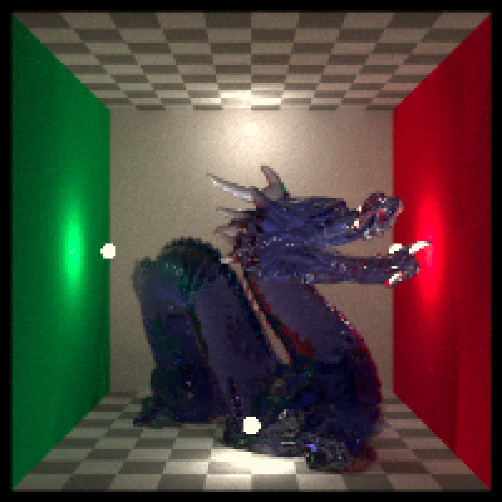
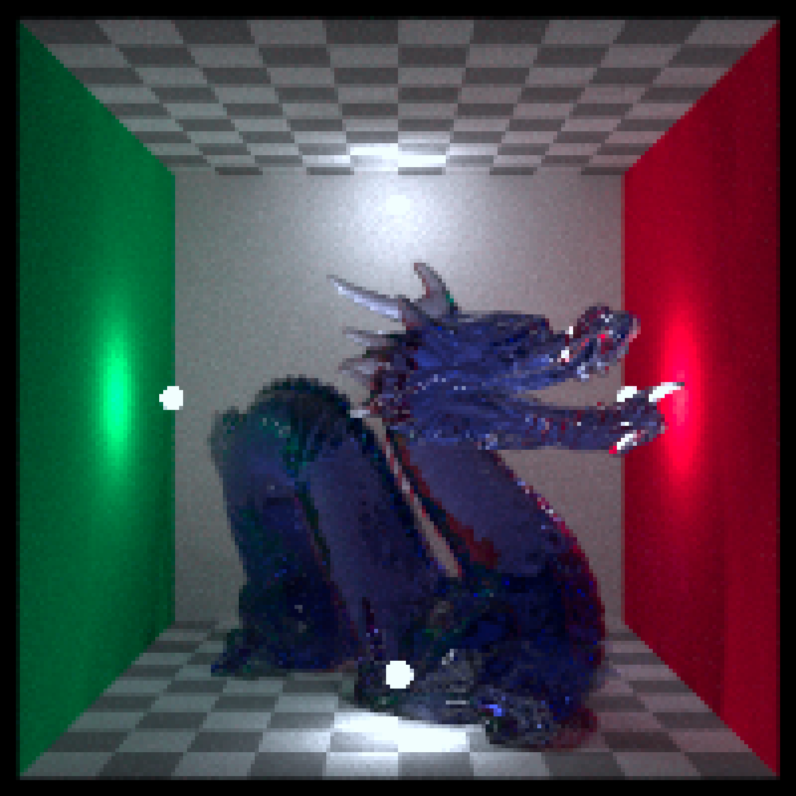
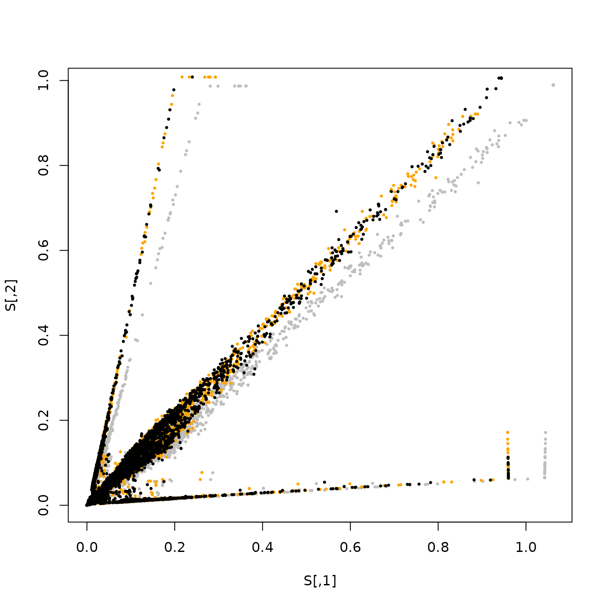
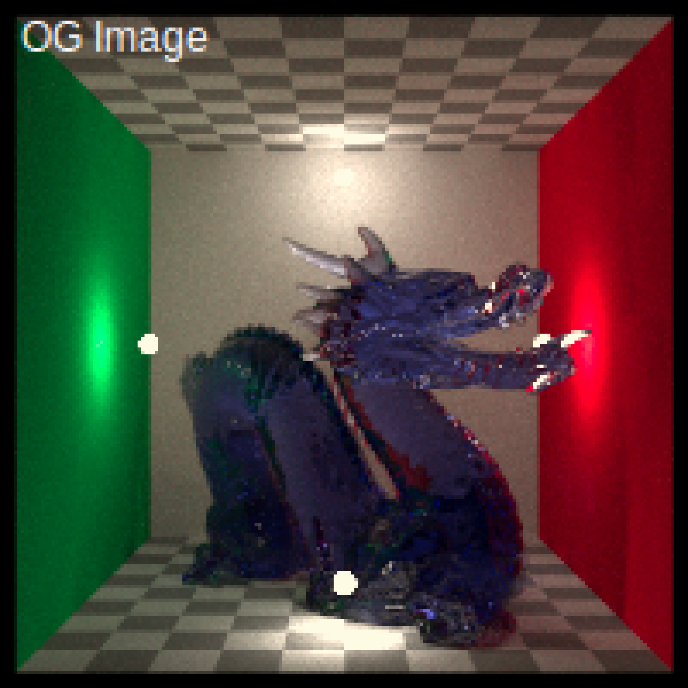
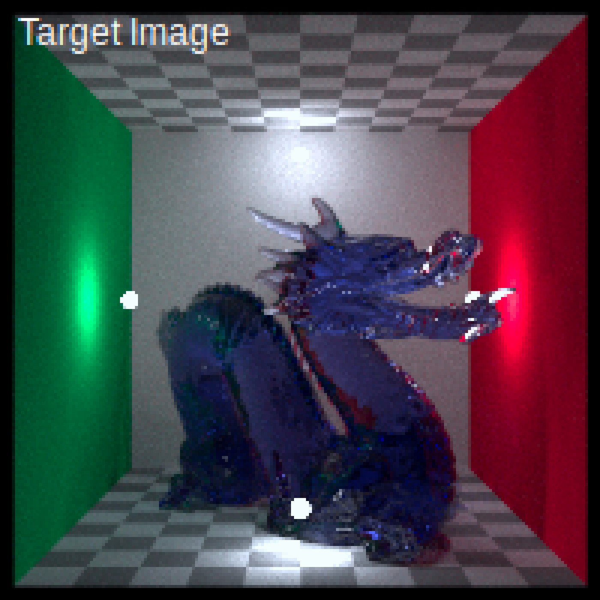
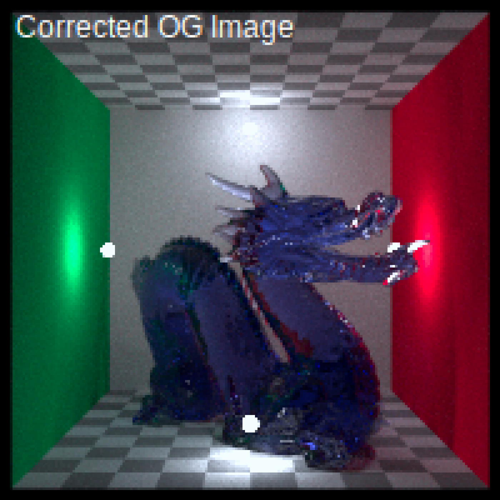

R/render_color_correction.R
render_color_correction.RdApply a technical/look 3x3 matrix to an image
render_color_correction(
image,
matrix = diag(3),
filename = NULL,
preview = FALSE
)A rayimg RGBA array.
# We will start with an image that's too warm--we want to correct it to
# match the color of the second as closely as possible.
dragon_D50 = render_white_balance(dragon, target_white = "D50", bake = TRUE)
dragon_D75 = render_white_balance(dragon, target_white = "D75", bake = TRUE)
plot_image(dragon_D50)

plot_image(dragon_D75)

# Fucntion to fit a color correction matrix
fit_cc_matrix = function(src, tgt) {
stopifnot(ncol(src) == 3, ncol(tgt) == 3, nrow(src) == nrow(tgt))
M_t = apply(tgt, 2, function(y) qr.solve(src, y))
t(M_t)
}
# Sample N RGBs from an image for fit
rand_samples = function(img, n = 5000, seed=1) {
set.seed(seed)
d = dim(img)
ys = sample.int(d[1], n, TRUE); xs = sample.int(d[2], n, TRUE)
cbind(img[cbind(ys,xs,1)], img[cbind(ys,xs,2)], img[cbind(ys,xs,3)])
}
S = rand_samples(dragon_D50)
T = rand_samples(dragon_D75)
M = fit_cc_matrix(S, T)
# Optionally, regularize toward identity to avoid overfitting
# M = 0.8 * M + 0.2 * diag(3)
updated_source = render_color_correction(dragon_D50, matrix = M)
# Matching the old image (grey) to the target image (orange),
# giving a new image (black).
plot(S,pch=16,cex=0.5,col="grey")
points(T,pch=16,cex=0.5,col="orange")
points(rand_samples(updated_source,seed=2),pch=16,cex=0.5,col="black")

# Plot the images
plot_image(render_title(dragon_D50, "OG Image",
title_color = "white", title_size = 12))

plot_image(render_title(dragon_D75, "Target Image",
title_color = "white", title_size = 12))

plot_image(render_title(updated_source, "Corrected OG Image",
title_color = "white", title_size = 12))
